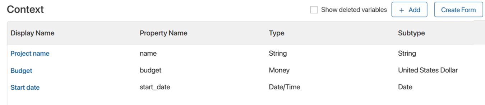
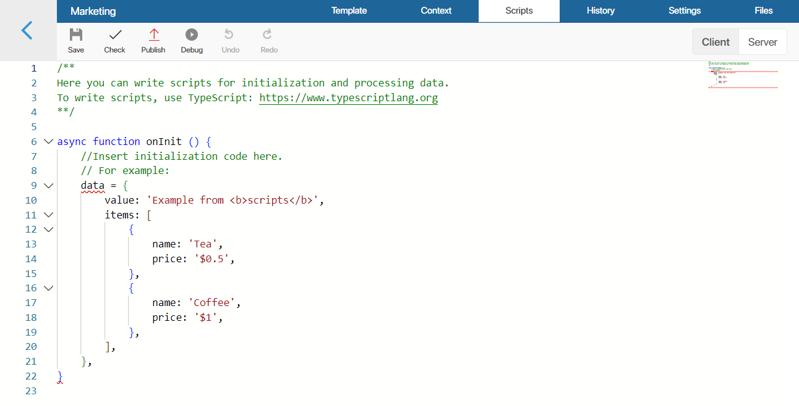
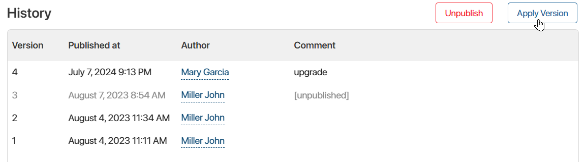
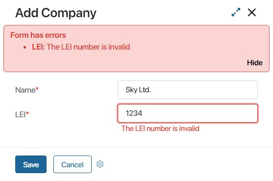
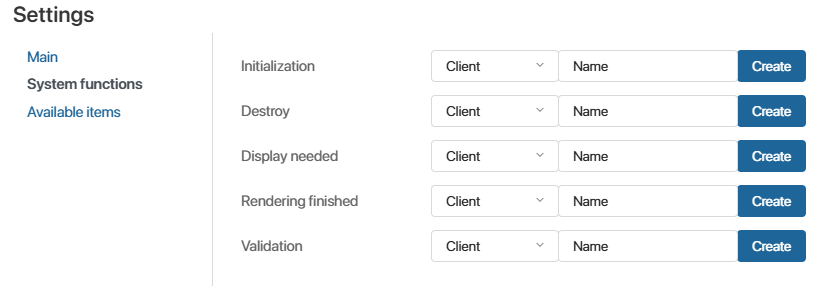
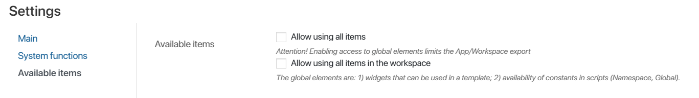
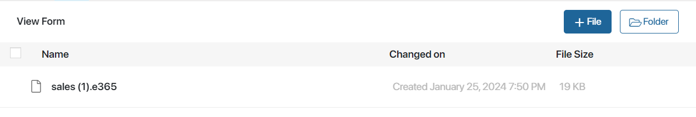

In the interface designer, you can work on the Template, Context, Scripts, History, Settings, and Files tabs.
Template tab
On the Template tab, you will fill the interface with widgets and customize the appearance of pages and forms.
To add a widget, drag it to the modeling canvas and customize it. You can use standard widgets, and you can also create your own custom widgets.
Standard widgets are grouped by type. Depending on what item of the system you are customizing, a page or a form, you will have a specific set of widgets available to you. For example, you cannot add widgets intended for the form sidebar to pages. Forms, on the other hand, cannot have widgets intended for pages.
To create a custom widget, combine the standard widgets with each other. For example, you can add a Panel with header, place Columns in it, and in one of the columns add a Table with a report. Save the widget, and you can use it later when customizing other interfaces.
To learn how to place widgets on the canvas, see the Add a widget to a page and Form templates articles.
Context tab
On the Context tab, you can add properties that can be placed on the modeling field and used in scripts. To create a property, click +Add and specify its parameters. Read more about properties and how to add them in the Context tab, System data types, and Context types articles.

Scripts tab
On this tab, you can write scripts for data processing to use them in widget settings. For example, you can use a script to display current exchange rates on the page or create a page header that will change depending on the current date.
You can also customize the behavior of widgets, for example, to show a popup window when the user hovers over a certain area of a form or page. Read more about it in the Scripts in widgets article.

History tab
On this tab, you can view all published versions of the interface with the author, time, and comments left during publication. The list will also show versions that have been unpublished.

Restore a previous version
You can restore any previously published version of the interface. To do this, select it in the list, click the Apply Version button in the upper right corner of the page, and confirm the action.
The settings of the selected version will be applied to the current draft of the interface opened on the Template tab. All saved but not published changes will be lost.
You can edit the restored version of the form or page, and change the layout or widget settings. To apply the interface and allow users to access it, click the Save and Publish buttons on the top panel of the designer again.
Unpublish a version
To avoid scripting a previous version of the interface or to prevent applying a version with an error, you can unpublish it. To do this, select the version in the list and click Unpublish in the top right corner of the page.
You can also unpublish all previous versions of the interface while publishing a new version.
If you want to restore an unpublished version, select it from the list, and in the upper right corner of the page click the Restore publication button that appears.
Settings tab
On this tab, you can:
- Hide the widget with validation errors.
- Make it possible to display the widget on the top panel or sidebar.
- Set system functions.
- Allow the use of the following in the widget:
- Global objects.
- Elements of the current workspace.
- Objects and variables from selected workspaces or custom modules with which optional dependencies are established. This capability is a useful option for solution development, as in this case, the widget can be exported without limitations.
Main settings
If you are customizing the creation or editing form of an app item, task, or start event, you can use the Hide widget with validation errors option. Select the checkbox to display validation errors only under incorrectly filled fields. If the option is disabled, the widget is displayed at the top of the form and lists all errors.

Custom widget settings
When you create a custom widget on this tab, you can control its placement within other interfaces. By default, a custom widget can only be added to the main part of the form. You can enable the following options:
- Display widget in the form header with buttons. Check the box to allow the widget to be placed on the top panel of any form.
- Display widget in the sidebar. Check the box to allow placing the widget in the sidebar of any form.
You can also customize the widget display on the designer modeling canvas of a form or page. The selected view does not affect the functionality of the widget after the custom interface is published.
Available options:
- Full. By default, the widget is displayed on the modeling canvas in the same way as it will be displayed after publication.
- Call initialization function in the builder. By default, the initialization function is enabled in the widget containing scripts and allows, for example, sending requests to the server to obtain data.
In the form editing mode, there may not be enough data on the server and the scripts will be executed with an error. To prevent this from affecting the display of the widget and the work of the designer, disable the option.
- Show only the widget name. Only the widget name is displayed in the designer to indicate its location on the form. You can use it to compactly place widgets on the modeling canvas and quickly go to their settings.
- Custom widget. When you select this view, the Create Form button will appear. Click it and create a widget form that will be displayed instead of the original one when modeling a form or a page.
This is convenient if the widget contains, for example, text content and other widgets. In this case, you can show the widget schematically on the template. Such a form is configured, for example, for the Modal Window widget.
System functions
Here you can select the functions you want to apply when displaying the widget or validating the form. It is optional to specify functions on this tab.
By default, the following functions are executed if they are defined in scripts:
- onInit() when initializing the widget.
- destroy() when ending the widget’s work.
- canRender() when checking the conditions for displaying the widget.
- onLoad() when the rendering of the widget is completed.
You can replace these functions with other functions to customize the execution of additional actions, for example, loading and preparing data for displaying in the widget. To do this, select a function or create one in the Initialization, Destroy, Display needed, or Rendering finished fields.
You can also select a function to perform custom validation that makes sure that the form is filled out correctly. By default, no function for validation is set. In this function, you can implement additional checks to the already existing standard validation when the user tries to save the form. For example, define checks for form field values.

To specify a function from your scripts, select Client or Server and specify its name.
You can proceed to create a script by clicking Create. Then specify the name of the function and click Save. After that, go to the Scripts tab by clicking Open. To learn more about creating a script on the Client or Server side, read the Scripts in widgets article.
Available items
Here you can allow the use of widgets configured at the workspace or company level, as well as access global constants in the script.

- Available items. Provide access to additional items of other levels:
- Allow using of all items. Check the box to enable access to the Global and widgets from other workspaces. Then you can use variables contained in workspaces and global parameters when writing scripts. Please note that using the
Globalconstant and widgets from other workspaces restricts the ability to export an app or workspace. - Allow using all items in the workspace. Check the box to access the Namespace constant and widgets of the current workspace. Please note that accessing workspace objects in a script and using workspace widgets restrict the ability to export an app.
- Allow using of all items. Check the box to enable access to the Global and widgets from other workspaces. Then you can use variables contained in workspaces and global parameters when writing scripts. Please note that using the
начало внимание
Using Global or Namespace constants in scripts restricts the export of system components. For more information, refer to Global constants in scripts.
конец внимание
- Optional dependencies (available in the Imports object). Set optional dependencies on selected workspaces or custom modules. The specified components can then be accessed in the widget script using the Imports constant. This allows you to export and import an app or workspace without restrictions.
To set the dependency, click +Add Workspace and select the workspace or custom module. Then, in the Alias column, enter a unique name for it that will be used in the script. You can use numbers and an underscore to separate words. By default, the field contains the workspace code or module ID.
начало внимание
Optional dependencies and the Imports constant are available by default in the SaaS delivery as well as On-Premises starting with system version 2024.2. In earlier versions, the system administrator needs to enable the allowScriptImportsDependencies feature flag. For more information, refer to Modify BRIX Enterprise parameter and Modify BRIX Standard parameters.
конец внимание
For more information about using Global and Namespace constants in scripts, see Global context and isolation in BRIX TS SDK. The use of the Imports constant is described in the Optional dependencies article.
Files tab
On the Files tab, you can add JavaScript libraries and custom functions to access them in client-side scripts.
